Abstrakt

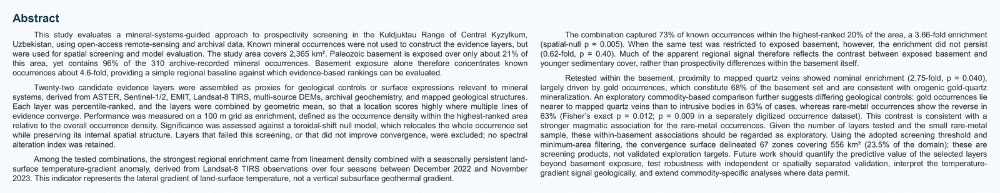

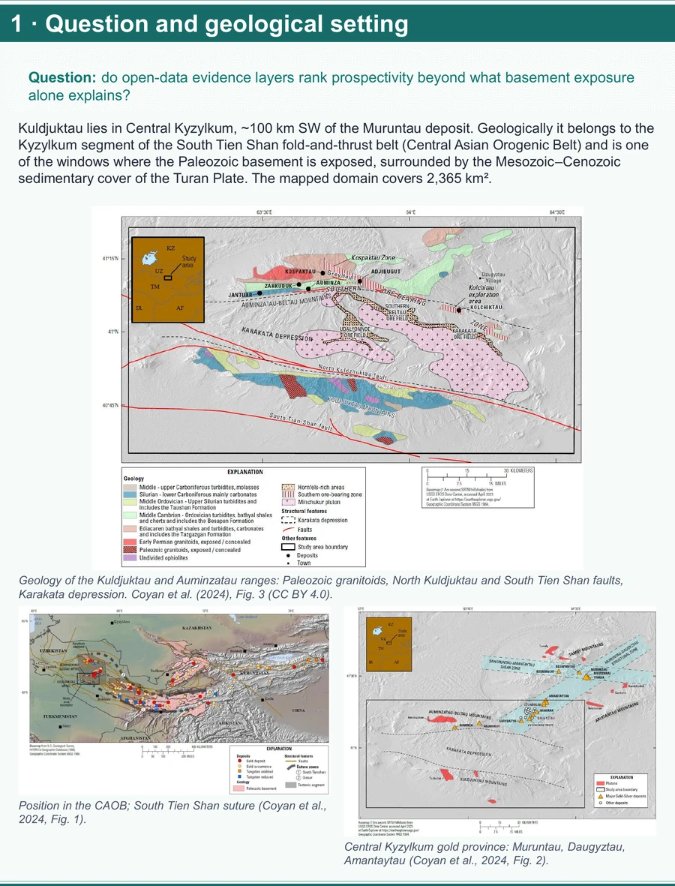
Kuldjuktau Markaziy Qizilqumda, Muruntau konidan taxminan 100 kilometr janubi-g‘arbda joylashgan. Hudud Janubiy Tyanshan burmali va surilmali belbog‘ining Qizilqum segmentiga kiradi. Xaritalarda paleozoy jinslari mezozoy va kaynozoy qoplamasi orasida alohida ochilgan ‘oynalar’ sifatida ko‘rinadi. Bu tektonik va stratigrafik fon Coyan va hamkorlari hamda Mirkamalov va hamkorlari tadqiqotlarida bayon qilingan. [R1, R2]
Biz tahlil qilgan 2 365 km² maydon butun tog‘ tizmasi emas, poster uchun belgilangan hisoblash domenidir. Birinchi savolimiz: fundament ochilishi hisobga olingandan keyin ham ochiq ma’lumot qatlamlari mineral namoyonlarni reytingda yuqoriga olib chiqadimi? Shu savol keyingi barcha panellarni birlashtiradi. [A, P]

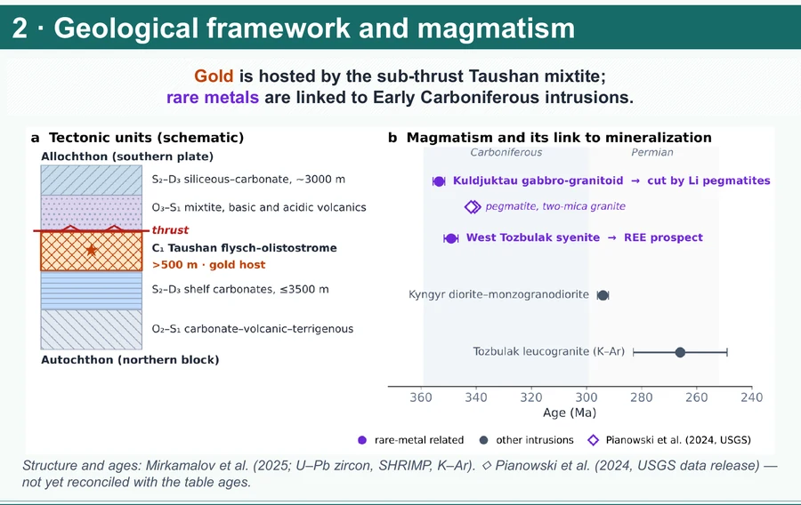
Taushan va Yangikazgan oltin namoyonlari surilma ostidagi Taushan mikstit ketma-ketligiga bog‘langan. Mikstit tarkibida fliysh va olistostrom unsurlari bor; yirik strukturaviy chegaralar esa flyuid harakati uchun muhim bo‘lishi mumkin. Bu mezbon jins bilan strukturani ajratish zarur: tomirga yaqinlik oltin manbasining o‘zi haqidagi dalil emas. [R2, R3]
Noyob metall namoyonlari boshqa geologik fon bilan bog‘liq. Mirkamalov va hamkorlari Kuldjuktau gabbro-granitoid majmuasi uchun 353,5 ± 2,1 mln yil, G‘arbiy Tozbuloq majmuasi uchun 349,1 ± 2,5 mln yil atrofidagi U–Pb yoshlarni keltiradi. Bu intruziyalar yoshidir; ruda hosil bo‘lgan vaqtni avtomatik belgilamaydi. Posterning o‘zi ham USGS geoxronologiya ma’lumotlari bilan yoshlar jadvali hali to‘liq muvofiqlashtirilmaganini qayd etadi. [P, R2, R5]

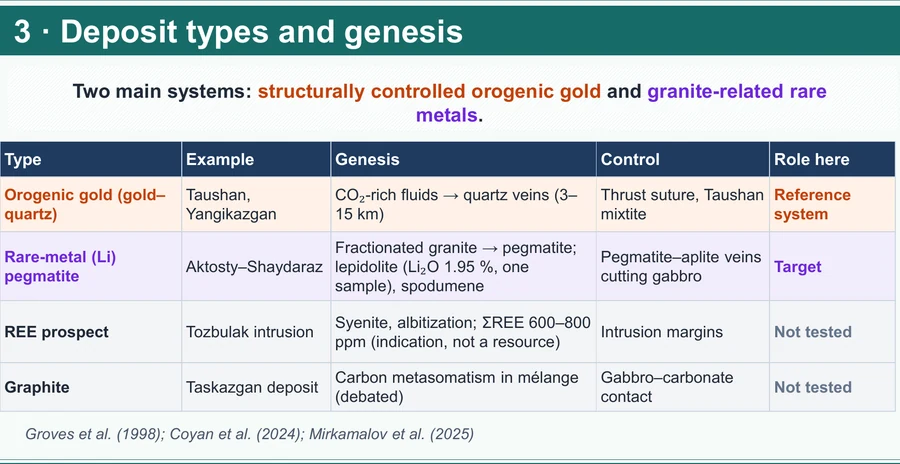
Poster ikkita asosiy tizimni solishtiradi. Birinchisi — struktura va kvars tomirlari bilan bog‘liq oltin. Orogen oltin modeli tektonik yoriqlar bo‘ylab flyuid migratsiyasi va qulay fizik-kimyoviy sharoitda cho‘kishni tushuntiradi. Hududdagi oltin-kvars tasnifi shu modelga mos keladi, lekin alohida kon uchun flyuid manbasi va mineralizatsiya yoshi bu posterda mustaqil isbotlanmagan. [R1, R3]
Ikkinchisi — intruziv jarayonlar bilan bog‘liq noyob metall namoyonlari. Aktosti–Shaydarazda lepidolit va spodumenli pegmatitlar xaritalangan; Mirkamalov va hamkorlari bitta lepidolit namunasida Li₂O 1,95 og‘irlik foizini qayd etadi. Tozbuloq albitlanish zonalarida ΣREE 600–800 ppm ko‘rsatkichlari berilgan. Bular alohida namuna yoki zona haqidagi geokimyoviy dalillardir, zaxira yoki iqtisodiy kon bahosi emas. Grafit va volfram tizimlari ham hududda bor, ammo posterdagi ushbu ikki tizim taqqoslashining asosiy predmeti emas. [R1, R2]

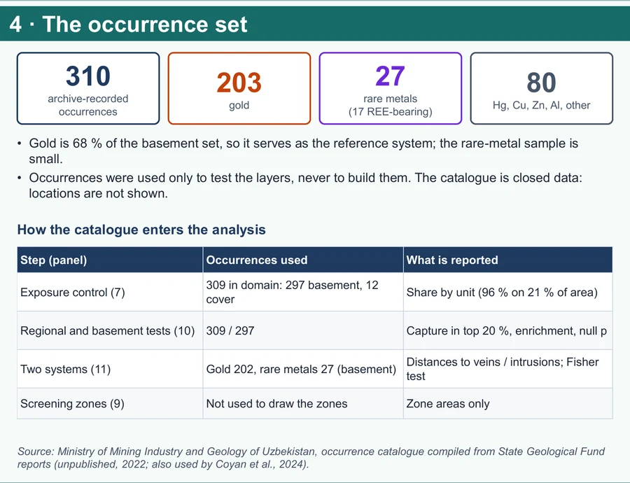
Arxiv katalogida 310 ta namoyon bor: 203 tasi oltin, 27 tasi noyob metall, qolgan 80 tasi simob, mis, rux, alyuminiy va boshqa guruhlarga kiradi. Noyob metall guruhining 17 tasi REE belgili; demak 27 ta obyektning hammasini REE deb atamaslik kerak. Oltin fundament ichidagi namoyonlarning taxminan 68 foizini tashkil etadi va taqqoslash uchun tayanch tizim bo‘lib xizmat qiladi. Katalog yopiq bo‘lgani sabab nuqtalarning aniq koordinatalari posterda berilmagan. [P, A]
Namoyonlar dalil qatlamlarini yasash uchun ishlatilmagan. Biroq qatlamlarni saralash va natijani o‘lchashda ayni katalogdan foydalanilgan. Shuning uchun yakuniy boyish qiymatlari mustaqil prognoz sinovi emas, retrospektiv skrining natijasidir. Arxivda qidiruv ishlari ko‘proq ochiq fundamentda bajarilgan bo‘lishi ham mumkin; 96 foizlik to‘planishni sof geologik sabab deb talqin qilmaymiz. [A, P, D1]

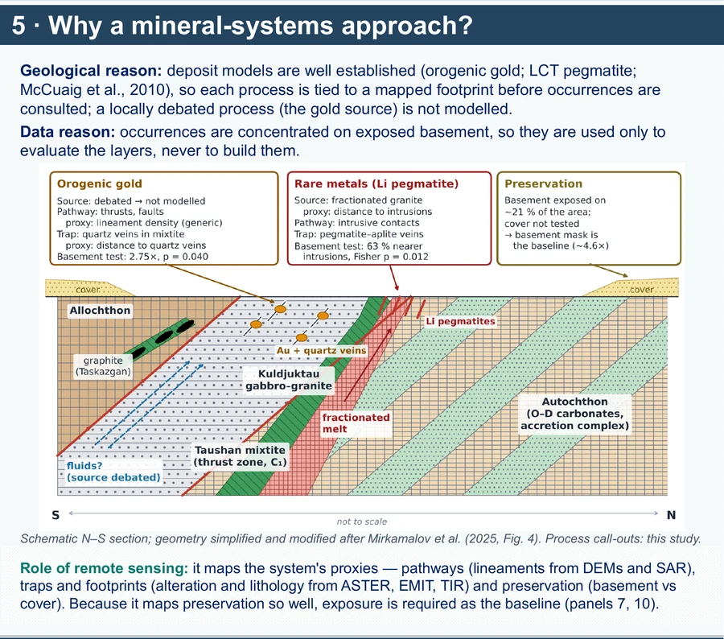
Mineral tizimlar yondashuvida xarita qatlamidan avval geologik jarayon nomlanadi: metall yoki flyuid manbasi, harakat yo‘li, cho‘kish uchun qulay joy va saqlanib qolish sharoiti. McCuaig va hamkorlari ta’kidlaganidek, jarayonning o‘zini bevosita xaritalamaymiz; uning kuzatiladigan geologik izini proksi sifatida olamiz. Masalan, yoriqlar yo‘lning, kvars tomirlari esa oltin cho‘kishi mumkin bo‘lgan joyning belgisi bo‘lishi mumkin. [R4]
Bu ishda umumiy proksilar bilan tizimga xos proksilar ajratilgan. Lineament, sirt harorati gradienti va spektral indekslar keng maydonli signallarni sinaydi; kvars tomirigacha hamda intruziyagacha masofa esa aniqroq geologik farazni sinaydi. Oltinning mahalliy manbasi bahsli bo‘lgani uchun unga alohida manba modeli bog‘lamadik. [P, R1, R2]

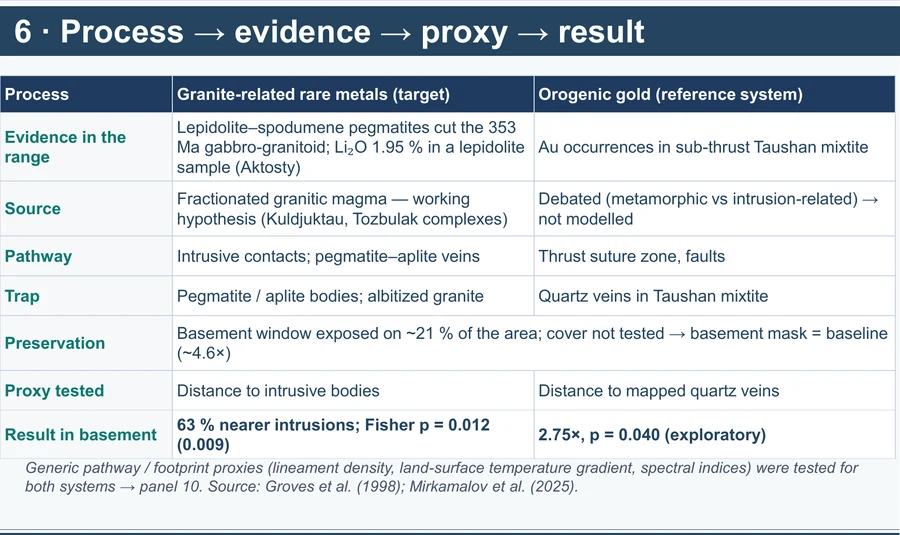
Markaziy jadvalning mantiqi bir xil: jarayon, dala yoki xaritadagi iz, raqamli proksi, so‘ng sinov natijasi. Oltin uchun surilma va yoriqlar ehtimoliy yo‘l, xaritalangan kvars tomirlari esa cho‘kish bilan bog‘liq proksi sifatida tanlangan. Noyob metall uchun pegmatit-aplit tomirlari va intruziv tanalar bilan bog‘liqlikdan kelib chiqib intruziyagacha masofa tekshirilgan. Fundamentning yer yuzasida ochilishi esa har ikki tizim uchun kuzatilish sharoiti sifatida alohida nazorat qilingan. [P, R2, R4]
Masofa natijasi sababni isbotlamaydi. Kvars tomiri bilan oltinning, intruziya bilan noyob metallning fazoviy yaqinligi geologik modelga mos bo‘lishi mumkin, lekin xaritalash zichligi, eski qidiruv yo‘nalishi va mezbon jins ta’sirini mustaqil dala va fazoviy tekshiruv bilan ajratish kerak. Shu sabab 11-paneldagi natijalarni farazni qo‘llovchi dastlabki dalil sifatida taqdim etamiz. [A, P]

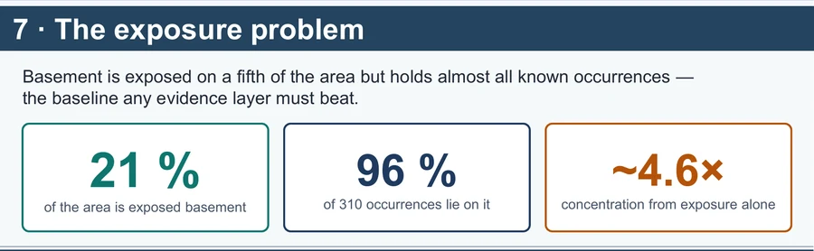
Domenning taxminan 21 foizida paleozoy fundamenti ochilgan, ammo katalogdagi 310 namoyonning qariyb 96 foizi shu joylarda. Agar namoyonlar maydonga bir tekis taqsimlangan deb olsak, faqat ochilishning o‘zi 96 ni 21 ga bo‘lganda taxminan 4,6 baravar boyish beradi. Bu hisob mineral resurs miqdori emas; u mavjud katalogning ochiq fundamentga fazoviy jamlanishidir. [A, P, D1]
Shu boshlang‘ich darajadan o‘tmasdan butun maydon bo‘yicha yuqori reytingni ‘yangi kon signali’ deb aytish xavfli. Qoplama ostidagi 79 foiz maydon bu ishda mustaqil baholanmagan. Ochiq fundamentda geologik signallar yaxshi ko‘rinishi va tarixiy qidiruvlar aynan shu joylarga yo‘nalgan bo‘lishi mumkin. [A, P, R1]

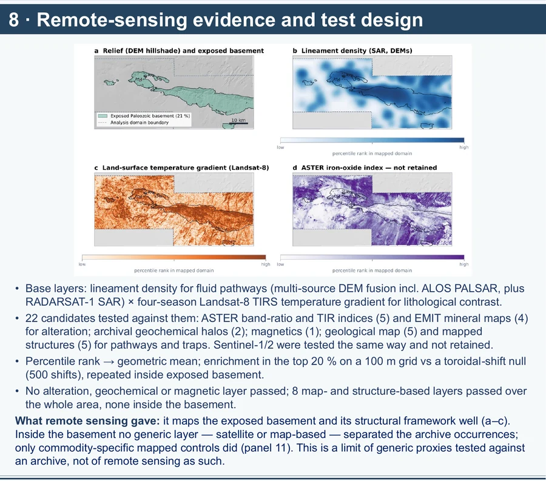
Boshlang‘ich kombinatsiya lineament zichligi va Landsat 8 TIRS tasvirlaridan to‘rt fasl bo‘yicha tuzilgan yer sirti haroratining yonlama gradientidan iborat. Lineamentlar relyef va radar ma’lumotlaridagi chiziqli shakllarni bildiradi; har bir chiziq ruda o‘tkazuvchi yoriq degani emas. Harorat gradienti esa yonma-yon sirt piksellari orasidagi farqni ko‘rsatadi. Bu yer ostidagi vertikal geotermal gradient emas; uning litologiya, emissivlik, relyef yoki sirt sharoiti bilan aloqasi alohida izohlanishi kerak. [P, R6]
Jami 22 nomzod qatlam sinalgan: ASTER indekslaridan 5 ta, EMIT mineral xaritalaridan 4 ta, arxiv geokimyosidan 2 ta, magnit ma’lumotidan 1 ta, geologik xaritadan 5 ta va struktura xaritalaridan 5 ta. Sentinel ma’lumotlari ham sinalgan, ammo yakuniy kombinatsiyada saqlanmagan. Har bir qatlam 100 metrli gridda foizli reytingga keltirilib, reytinglar geometrik o‘rtacha bilan birlashtirilgan. Yuqori 20 foiz maydonga to‘g‘ri kelgan namoyon ulushi maydon ulushiga bo‘linib boyish koeffitsienti hisoblangan. [A, P, D1]
Fazoviy tasodifiylikni tekshirish uchun butun namoyonlar to‘plami birga siljitilgan: bu nuqtalarning o‘zaro joylashuvini saqlaydi, lekin reyting xaritasiga nisbatan o‘rnini o‘zgartiradi. Dastlab 500 ta siljitish so‘ralgan; domen chegarasi sabab butun maydon natijasida 412, fundament ichidagi natijada 271 ta yaroqli taqqoslash qolgan. Posterdagi p qiymatlar aynan shu tarixiy usul va qatlam saralashiga tegishli nominal qiymatlardir. [P, D1]

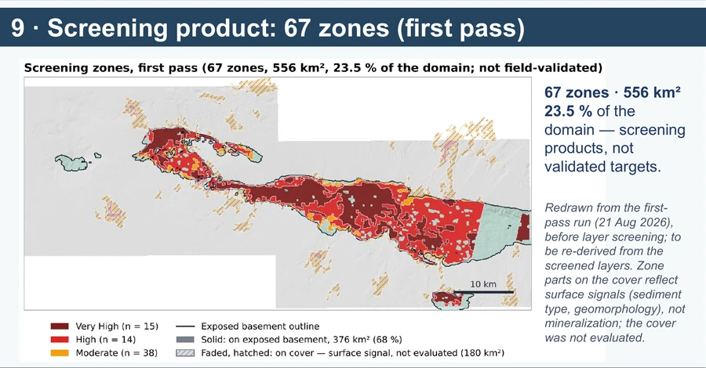
Xaritadagi 67 zona 556 km² ni, ya’ni 2 365 km² domenning 23,5 foizini qamraydi. Bu qatlamlarni yakuniy saralashdan oldin, 2026-yil 21-avgustdagi birinchi skrining hisobida chizilgan poligonlardir. Shu bois ularni keyingi, faqat saqlangan qatlamlar asosida qayta hosil qilingan yakuniy xarita deb ko‘rsatmaymiz. [A, P, D3]
Zona chegarasi reyting chegarasi, morfologik tozalash va eng kichik maydon filtri bilan belgilanadi. Shu sabab 23,5 foizlik poligon maydonini 10-paneldagi yuqori 20 foiz sinovi bilan tenglashtirib bo‘lmaydi. Qoplama ustidagi ayrim zonalar sirt materiali yoki geomorfologiyani ifodalashi mumkin; mineralizatsiya tasdiqlanmagan. Dala tekshiruvi va mustaqil validatsiyasiz ular faqat keyingi ishni rejalashga xizmat qiladi. [P, D3]

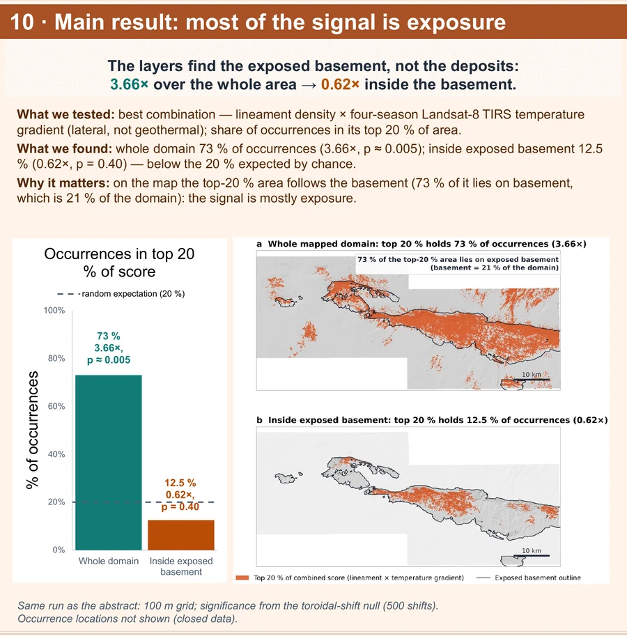
Butun domenda lineament zichligi va harorat gradienti kombinatsiyasining yuqori 20 foizida namoyonlarning 73,1 foizi joylashgan. Maydon ulushi 20 foiz bo‘lgani uchun boyish 73,1/20 ≈ 3,66 baravar. Posterdagi tarixiy fazoviy null hisobida p ≈ 0,005. Gridga tushgan namoyonlar soni bu hisobda 309 ta; katalogning umumiy soni 310 ta. [A, P, D1]
Xuddi shu savol faqat ochiq fundament ichida qo‘yilganda yuqori 20 foiz maydon 297 namoyonning 12,5 foizinigina qamraydi: boyish 0,62 baravar va p = 0,40. 0,62 tasodifiy 1,0 dan kichik ko‘rinsa-da, p = 0,40 bo‘lgani uchun uni namoyonlardan ‘qochish’ning isboti deb talqin qilmaymiz. Natija shuni ko‘rsatadi: kuchli regional signalning katta qismi fundament bilan qoplama o‘rtasidagi farqdan keladi; shu proksilar fundament ichida ishonchli ajratish bermagan. [A, P, D1]

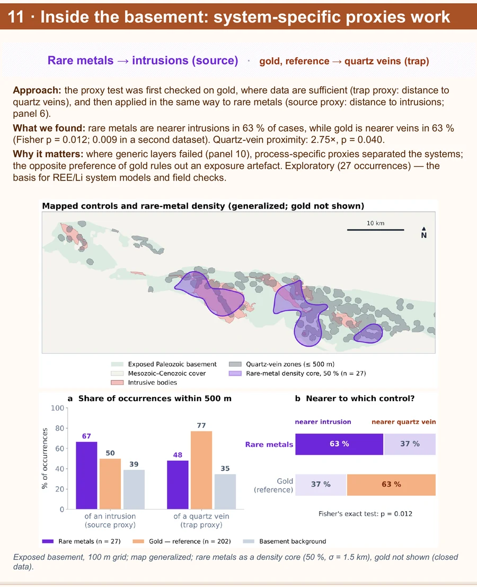
Fundamentdagi taqqoslashda oltin namoyonlarining 128 tasi kvars tomiriga, 74 tasi intruziyaga yaqinroq; bu 202 tadan qariyb 63 foiz kvars tomiri tarafida degani. Noyob metall guruhida 27 tadan 17 tasi intruziyaga, 10 tasi kvars tomiriga yaqinroq; yana qariyb 63 foiz, ammo teskari yo‘nalishda. Ikki guruh farqi uchun Fisherning aniq testi p ≈ 0,012; alohida raqamlashtirilgan xarita to‘plamida p ≈ 0,009 berilgan. Bular ikki xil ma’lumot to‘plami va ularning maxrajlarini aralashtirmaslik kerak. [A, P, D2]
Posterdagi kvars tomiriga yaqinlik uchun 2,75 baravar, p = 0,040 natijasi fundament ichidagi namoyonlar sinoviga tegishli va asosan oltin ko‘pligi bilan izohlanadi; uni ‘faqat oltin uchun 2,75’ deb atamaymiz. Bu proksi ham, Fisher natijasi ham bir necha qatlam sinovidan keyin tanlangan va noyob metall namunasi kichik. Shuning uchun farqni magmatik manba isboti yoki mustaqil bashorat sifatida emas, dala va fazoviy validatsiyada sinab ko‘riladigan geologik faraz sifatida aytamiz. [A, P, D2]

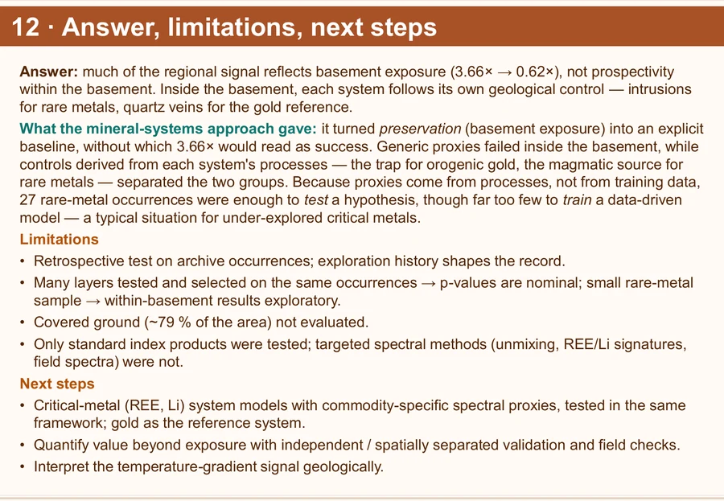
Asosiy javob: butun maydondagi 3,66 baravar boyish ochiq fundament nazoratidan so‘ng 0,62 ga tushadi. Shu sabab hozirgi umumiy sirt proksilari fundament ichida namoyonlarni ishonchli ajratdi deb ayta olmaymiz. Kvars tomirlari va intruziyalarga masofa tizimga xos farazlar uchun dastlabki ijobiy dalil beradi, lekin bu xulosa hali mustaqil tekshiruvdan o‘tmagan. [A, P, D1, D2]
Cheklovlar aniq: tahlil retrospektiv arxiv katalogiga tayangan; qidiruv tarixi kuzatuvlar taqsimotiga ta’sir qilishi mumkin; ko‘p qatlam ayni namoyonlar bilan sinalib saralangan; noyob metall guruhida atigi 27 ta obyekt bor; qoplama ostidagi maydon baholanmagan. Masofadan zondlashning standart indekslari sinalgani uning boshqa, maxsus spektral usullari ham foydasiz degani emas. Keyingi bosqichda fundament ta’siridan ortiqcha bashorat qiymatini mustaqil yoki fazoviy ajratilgan namoyonlarda tekshirish, harorat gradientining fizik sababini aniqlash va REE hamda Li uchun alohida proksilarni dala ma’lumotlari bilan sinash kerak. [A, P, D1, R4]
Manbalar va hisob qaydlari
- [A]
- [P]
- [D1]
- [D2]
- [D3]s1s2_swap/XULOSA.md
67 zona dastlabki skriningga tegishli ekani haqidagi mahalliy qayd.Matnga qaytish - [R1]
- [R2]Mirkamalov va hammualliflar, 2025 ↗
Applied Earth Science 134, 44–62. Kuldjuktau geologiyasi va minerallashuvi.Matnga qaytish - [R3]
- [R4]McCuaig, Beresford va Hronsky, 2010 ↗
Ore Geology Reviews 38, 128–138. Mineral tizimlarning xaritalanadigan mezonlari.Matnga qaytish - [R5]
- [R6]
- [R7]
- [R8]